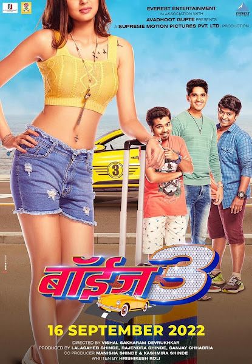

Ved (transl. Madness of love.) is a 2022 Indian Marathi-language romantic drama film directed by Riteish Deshmukh, in his directorial debut, and produced by his wife, Genelia D'Souza. The couple in lead is supported by Ashok Saraf and Jiya Shankar in pivotal roles.[4] It is an adaptation of the 2019 Telugu-language romantic drama, Majili.[5] Ved was theatrically released on 30 December 2022,[6] with critics generally appreciating the performances of the cast (especially both Riteish and Genelia's) cinematography, songs, and background score but criticised film’s narration & slow pace screenplay. As of 22 January 2023, with a net collection of ₹55.40 crore (US$6.9 million), it became the highest grossing Marathi film of 2022 and the second highest-grossing Marathi film of all-time. Incidentally, it is also the highest-grossing Marathi film of Deshmukh's career, surpassing the collections of Lai Bhaari. It is a critical & commercial success Satya Jadhav lives in Mumbai, with his father, Dinkar Jadhav. He aspires to play for the Indian Cricket Team and wants to initially get selected for the local Railways cricket team. While trying to get money to get into a cricket team, he runs into Nisha, and after some misunderstandings, they become close and fall in love. However, they are later separated by Nisha's parents, whose father is a strict Naval officer and disciplinarian, along with the circumstances that plague them. Nisha, who promises to return to Satya, never comes back. Satya falls into depression, turning to alcohol, and pushing away his dream of becoming a cricketer. Meanwhile, Shravani, Satya's neighbour, had been in love with Satya, since their childhood, of which he is unaware of. When she learnt of Satya's love for Nisha, she started distancing herself from him, but marries him a few years later, after sensing his and Dinkar's pain. However, Satya married Shravani due to pressure from his father, not out of love. He does not work and instead, relives his memories of Nisha. He relies on Shravani's salary, for money to buy alcohol, from the Indian Railways. When Satya goes to Delhi to help select some cricket players from a youth team, he encounters Khushi, Nisha's daughter. He learns from Nisha's father, that Nisha and her husband, Kunal, died in an accident. Heartbroken, Satya agrees to take Khushi in, as an adopted father, after Nisha's father requests him to, as it was Nisha's wish. He takes Khushi back to Mumbai for cricket training. After letting his family know of the situation, Satya and Shravani both decide to adopt Khushi. However, Khushi says that she will only agree to becoming their adopted daughter, only if, Satya and Shravani sort out their problems and not distance themselves, to which they agree to.
Pawankhind is a 2022 Indian Marathi-language historical action drama film directed by Digpal Lanjekar and produced under the banner of Almonds Creations in association with A A Films. The film based on the life of Maratha warrior, Baji Prabhu Deshpande, stars Chinmay Mandlekar, Mrinal Kulkarni, Ajay Purkar, Sameer Dharmadhikari, along with Ankit Mohan, Prajakta Mali and Kshitee Jog in supporting roles. It is the third entry in an eight-film series on the Maratha Empire. After Farzand and Fatteshikast, Digpal Lanjekar announced this third film on unsung Maratha heroes. It was followed by Sher Shivraj. The film was a huge commercial success with ₹43 crore (US$5.4 million) film become the third highest-grossing Marathi film of all time and the highest-grossing Marathi film of 2022. The film depicts the historical rearguard last stand that took place on 13 July 1660 at a mountain pass in the vicinity of fort Vishalgad, near the city of Kolhapur, Maharashtra, India between the Maratha Warrior Baji Prabhu Deshpande and Siddi Masud of Adilshah Sultanate, known as Battle of Pavan Khind. The film begins in 1674 with the Shivaji Maharaj (Chinmay Mandlekar) telling story of Battle of Pavan Khind to Sambhaji Maharaj (Stavan Shinde). The plot frequently switches flashback to 1660. Badi Begum (Kshitee Jog) asked everyone ‘’Who has dare to kill Shivaji’’? then Siddi Johar (Sameer Dharmadhikari) came into the kingdom & said "I have dare to kill Shivaji". Badi Begum gives him a chance to prove himself on one condition. If he kills Shivaji Maharaj she will give him a post in Bijapur Sultanate & If he is unsuccessful in killing Shivaji Maharaj , she will kill him. At that time Shivaji Maharaj was encamped at Panhala fort with his forces. Siddi Johar's army besieged the fort of Panhala and cut off the supply of routes to the fort. During the bombardment of Panhala, Siddi Johar purchased grenades from the English at Rajapur and hired some English personalities in their force. Shivaji Maharaj gave order to Bahirji Naik (Harish Dudhade) to search a secret road of Vishalgad in order to escape. Bahirji found the road and Shivaji Maharaj escaped from Panhala by cover of night but here they create a Shivaji Maharaj's look alike Shiva Kashid (Ajinkya Nanaware), a barber by profession sending him for the meeting with Siddi Johar. Shiva Kashid went to Siddi Johar but when Fazal Khan recognized him, Siddi killed Shiva Kashid. Here Adilshah's army was in pursuit with an army of 10,000. Then, Shivaji Maharaj decided to split his forces. Baji Prabhu Deshpande (Ajay Purkar) agreed to face Adilshah's troops with 300 soldiers. Shivaji Maharaj told him that he would hear cannons being fired 5 times, signaling Shivaji Maharaj's safety. Baji Prabhu occupied Ghodkhind, blocking the path of Adilshah troops. His brother, Fulaji, Rayaji Bandal, Shambusingh Jadhav, Aginya were present with him. Fulaji, Aginya, Rayaji and Shambusingh were killed after fierce fight. Baji Prabhu were wounded but carried on fighting at Ghodkhind. Five hours after starting the battle, the cannons were fired announcing that Shivaji Maharaj safely returned to Vishalgad. The plot frequently switches to 1674. Shivaji Maharaj renamed Ghodkhind to Pawankind in honour of the sacrifices of the 300 Maratha troops
Har Har Mahadev is a 2022 Indian Marathi-language epic historical action drama film written and directed by Abhijeet Deshpande and produced by Zee Studios along with Sunil Phadtare under the banner of Shree Ganesh Marketing And Films.[3] It stars Subodh Bhave as Chatrapati Shivaji Maharaj and Sharad Kelkar as Baji Prabhu Deshpande in lead while Amruta Khanvilkar, Nishigandha Wad, Sayali Sanjeev, Hardeek Joshi, Milind Shinde, Kishore Kadam, Nitish Chavan and Ashok Shinde plays important supporting roles. The film is about the inspiring story of Baji Prabhu Deshpande, a general of Chhatrapati Shivaji Maharaj who, along with his army of 300 soldiers, fought against 12,000 Bijapuri soldiers.[4] The film was released theatrically on 25 October 2022[5] and digitally in Hindi on 8 December 2022 on ZEE5.[6]
Upon release, Har Har Mahadev received positive reviews from critics and audiences for Deshpande's direction, cast performance (particularly Kelkar and Bhave), writing, cinematography, visual effects, and emotional weight,[7] and became a commercial success; it grossed ₹25 crore (US$3.1 million) worldwide becoming 4th highest-grossing film of the year.
The film is about the inspirational story of a real battle in which only 300 soldiers, led by Baji Prabhu Deshpande, the commander of Chhatrapati Shivaji Maharaj fought against 12,000 Bijapuri soldiers in Battle of Pavan Khind.
Subodh Bhave as Chhatrapati Shivaji Maharaj alias the Maratha Empire's founder and a Hindu warrior king who was known for his courage and the strategies to defeat Adilshahi and the Mughals in many of his battles.[8]
Sharad Kelkar as Baji Prabhu Deshpande, the commander of Chhatrapati Shivaji Maharaj who anointed his own blood on the land of Swarajya.[9]
Amruta Khanvilkar as Sonabai Deshpande, the homemaker who takes care of the house and passionately supports the warrior, wife of Baji Prabhu Deshpande.[10]
Nishigandha Wad as Rajmata Jijaun alias Jijabai Bhonsle, the mother of Shivaji, a very powerful woman who laid the foundation of Swarajya.
Sayali Sanjeev as Maharani Saibai Bhonsale, Maharaj's strongest motivation, even though her health wasn't great.
Hardeek Joshi as Abaji Vishwanath, the clever, courageous, loyal companion who supported Chhatrapati Shivaji Maharaj till the end in the battle of Swarajya.
Nitish Chavan as Dhanaji Mhaskar, one of his many loyal, courageous and trustworthy Mavlas, who obeyed Chhatrapati Shivaji Maharaj's order.
Milind Shinde as Siddi Johar, the cruel, intrigue traitor of Adil Shah the one who took the urge to kill Maharaj.
Kishor Kadam as Tawji, the most talented and skilled blacksmith who produced weapons for Mavalas fighting Bandal Sena and Swarajya.
Ashok Shinde as Fulaji Prabhu Deshpande, the Brave companion of Chhatrapati Shivaji Maharaj and elder brother of Baji Prabhu Deshpande.
Sharad Ponkshe as Deshmukh
Mohan Joshi as Dhondiba
Soundtrack
Boyz 3 is a 2022 Indian Marathi-language comedy drama film directed by Vishal Devrukhkar and produced by Everest Entertainment. It stars Parth Bhalerao, Pratik Lad, Sumant Shinde and Vidhula Chaughule in lead roles.[1] Boyz 3 is a third installment of Boyz franchise and was scheduled to be theatrically released on 16 September 2022.[2]
Kabir has to travel to Karnataka before his birthday in order sign some property papers and also meet his estranged father he decides not to travel alone of feeling bored.Radhika comes with a solution that he should travel with his best friends Dhariya and Dhungya they decide to do a road trip, as Kabir is the only one who can drive the car he hires a private taxi.The trio have a hard time with taxi driver Sundar Gowda they notice that their college rival Naru Bhondwe has just passed alongside in a lavish car where Dariya and Dhungya come up with a plan to steal his car for their trip.After a tiff between Naru and Kabir at a restaurant they elope with the car but realize that they have left their bags and money in he taxi they decide to get crash a wedding as they are hungry but elope at the right time when they are about to be beaten for gate crashing.Next morning they see a girl hiding in their car and find that she has eloped from her wedding and introduces her as Keerti and decides to accompany them.But the boys are not ready to take her along until she decides to sponsor their trip by selling her bridal Jewellery .Thish leads to a adventurous journey where Dhariya and Dhungya get worried that Kabir might again fall in love and have a break up while Naru is chasing them for his car.—alex.mjacko@gmail.com
click here to go more information about film>

In order to increase his allowance, Aditya, who settled in Birmingham has written to his uncle staying in Satara, that he is married although he is a bachelor. One-day uncle drops in unexpectedly in Birmingham. And Aditya is drawn into the vertex of intrigue when Uncle mistakes Pooja, Aditya's Best friend Manav's wife, as Aditya's wife & the neighbor's Ruby as Manav's wife. Aditya is basically honest and does not wish to deceive his uncle but.. does he have a choice. The Uncle is impressed by Pooja and also decides to steps up Aditya's allowance for choosing a pretty & sweet girl like Pooja to be his wife. Uncle also promises Pooja that he will step up the allowance further if they have a baby. This leaves Aditya with no choice but to carry on this act, very much to Manav Patel's discomfort.
Further complications arise when Ruby, the neighbor PK's wife drops in at the house, and Uncle mistakes her for Manav's wife. Complications keep tumbling when the nightfall's, and it's time to retire. Who goes to bed with whom? Manav is irked when Aditya suggests that since the Uncle is home, he (Aditya) will have to spend the night with Pooja and is further annoyed when he (Manav) has to spend the night in the Maid's room.
The situation reaches its climax when Uncle nearly catches Manav sneaking into Aditya & Pooja's room. But the plot becomes more hilarious when the next-door drunkard neighbor P.K. drops in the bed with Uncle and is mistaken for someone else. The indescribable confusion that follows builds into a rich complexity of mistaken identities, splendid farcical situations, and a climax of comic wizardry.
From here on the permutations become so intricate that it seems impossible that Aditya, Pooja & Manav can ever sort them out. But miraculously they do, so hilariously that the audience will keep rolling with laughter till the movie ends. A fast, funny plot makes this rip-roaring farce easy & enjoyable for the entire family.
Production
Talking about the film, Lochya Zaala Re is based on Suresh Jairam's play of the same name 'PATI SAGLE OOCHA PATI'. While speaking about his star cast, filmmaker Paritosh Painter said "The entire film was shot in London. I had a lot of fun working with Ankush, Siddharth, Vaidehi, Sayaji Shinde, and all the actors. On the one hand, they were all well-known artists, so it was very easy to work with them".[1] It also features Sayaji Shinde, Vijay Patkar, Prasad Khandekar and Resham Tipnis in a pivotal role. Lochya Zaala Re was released on 4 February 2022.